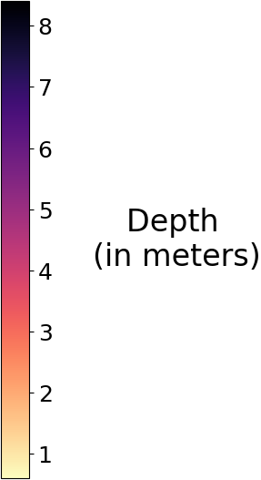

Time of the Flight of the Gaussians Optimizing Depth Indirectly in Dynamic Radiance Fields
Computer Vision and Pattern Recognition (CVPR) 2025 (Oral)

Abstract
We present a method to reconstruct dynamic scenes from monocular continuous-wave time-of-flight (C-ToF) cameras using raw sensor samples that achieves similar or better accuracy than neural volumetric approaches and is 100x faster. Quickly achieving high-fidelity dynamic 3D reconstruction from a single viewpoint is a significant challenge in computer vision. In C-ToF radiance field reconstruction, the property of interest—depth—is not directly measured, causing an additional challenge. This problem has a large and underappreciated impact upon the optimization when using a fast primitive-based scene representation like 3D Gaussian splatting, which is commonly used with multi-view data to produce satisfactory results and is brittle in its optimization otherwise. We incorporate two heuristics into the optimization to improve the accuracy of scene geometry represented by Gaussians. Experimental results show that our approach produces accurate reconstructions under constrained C-ToF sensing conditions, including for fast motions like swinging baseball bats.
Video
Results
Citation
@InProceedings{Li_2025_CVPR,
author = {Li, Runfeng and Okunev, Mikhail and Guo, Zixuan and Duong, Anh Ha and Richardt, Christian and O'Toole, Matthew and Tompkin, James},
title = {Time of the Flight of the Gaussians: Optimizing Depth Indirectly in Dynamic Radiance Fields},
booktitle = {Proceedings of the Computer Vision and Pattern Recognition Conference (CVPR)},
month = {June},
year = {2025},
pages = {21021-21030}
}Acknowledgements
RL, MO, ZG, AHD, and JT thank NSF CAREER 2144956, NASA RI-80NSSC23M0075, and Cognex. MOT thanks NSF CAREER 2238485.